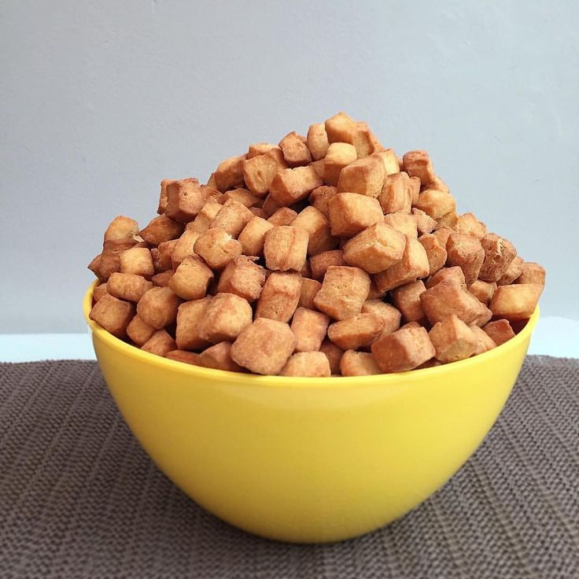

Chin Chin is a popular crunchy snack in Nigeria. This simple recipe will guide you through making delicious homemade chin chin for personal use or business.
Ingredients
- Flour
- Sugar
- Butter or Margarine
- Milk
- Eggs
- Nutmeg (optional)
- Vegetable oil (for frying)
Instructions
- Mix flour, sugar, and nutmeg in a bowl.
- Add butter and mix until crumbly.
- Add eggs and milk, then mix into a dough.
- Roll out the dough on a flat surface.
- Cut into small cubes or desired shapes.
- Heat oil in a pan and fry until golden brown.
- Remove and allow to cool before serving.
Finished Chin Chin
